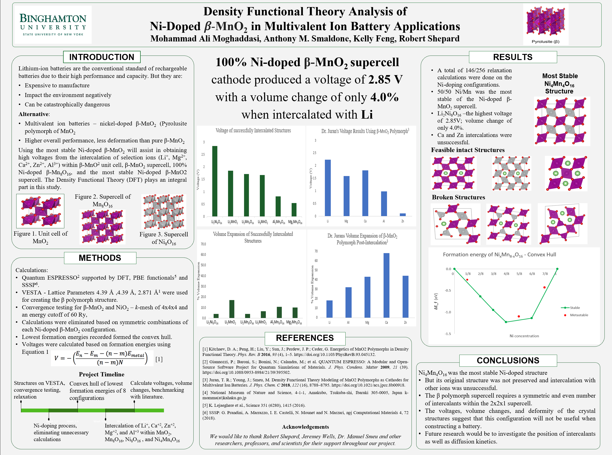

Research
Experimental Research & Development of
Field-Emission Electric Propulsion Ion Source
This experimental research models and characterizes
a single-emitter field-emission electric propulsion (FEEP) thruster in a vacuum environment. Multiple experiments were performed
to produce thrust using our FEEP thruster with indium as the propellant. However, as of right now, we have yet to achieve thrust,
since we have been having issues in our heating system of the indium ion to reach its melting point of 150 Celsius.
All the experiments were conducted in the Advanced Space Transit and Architectures (ASTRA) Laboratory
of Dr. Elaine Petro at Cornell University. A report of the works completed in the Fall semester of 2021 can
be seen here.
PUBLICATION - Development of Secondary Multivalent Ion Batteries - An Alternative to Lithium Ion Batteries

Computational study of effect of water on Vanadium Pentoxide as a secondary battery cathode in mono-, di-, and trivalent ion applications. In this work we investigated and compared the differences of aqueous vs. nonaqueuos vanadium pentoxide for a battery application.
Multivalent ion batteries show promise to be a safer alternative to the conventional single-valent lithium ion batteries. This is important because as technology advances, the demand for safe and dense energy storages increases. This has led to the search for “beyond-Li” batteries. We found that the coordination of H2O molecules with the ion leads to an improvement in voltage and energy density for all ions. Click here to view the published manuscript on Physical Chemistry Chemical Physics.
Development of Secondary Batteries:
Nickel-Doped/Undoped Manganese Dioxide

The purpose of this study was to develop rechargeable batteries by proposing multivalent ion batteries. The electronic and physical properties of manganese dioxide were investigated to determine its viability as a cathode in a secondary battery application. Journal publishing in process.